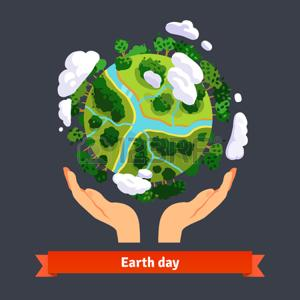
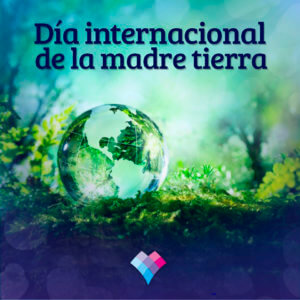

Día Internacional de la madre Tierra 22 de abril

- 
- 
Realizado por:
Jose manuel hernandez atonal
4G
Especialidad:
Programación
Submódulo:
Desarrola Aplicaciones Móviles
Docente:
Lic.José Antonio Gómez Hernández
4G
Programación
Desarrola Aplicaciones Móviles
Lic.José Antonio Gómez Hernández
Celebramos el Día Internacional de la Madre Tierra para recordar que el planeta y sus ecosistemas nos dan la vida y el sus tento. Con este día, asumimos, además, la responsabilidad colectiva, como nos recordaba la Declaración de Río de 1992, de fomentar esta armonía con la naturaleza y la Madre Tierra. Este día nos brinda también la oportunidad de concienciar a todos los habitantes del planeta acerca de los problemas que a fectan a la Tierra y a las diferentes formas de vida que en él se desarrollan.
Instituido en 1992 por la Organización de las Naciones Unidas, el Día Internacional de la Madre Tierra es una fecha para reflexionar sobre el efecto que nuestros hábitos y en general nuestra vida cotidiana tiene en el medio ambiente que nos acoge y nos recibe.
La preocupación explícita por nuestro entorno y, en general, el medio ambiente, se ha popularizado solo en las últimas décadas, en buena medida porque los hábitos y prácticas de nuestra vida cotidiana alcanzaron desde mediados del siglo XX un pico negativo en su efecto sobre la naturaleza y sus procesos. La vida industrializada que en el siglo XIX se volvió ya irreversible, cobró años después la factura ambiental que, también esta, se adivinaba inevitable.
Un poco en respuesta a esto, en 1970 se instituyó en Estados Unidos el Día Tierra, un año después de que se registrara un devastador derrame petrolero en las costas de Santa Bárbara, California, con la consecuente protesta de activistas y en especial un senador de la época, Gaylord Nelson, que en compañía de ciudadanos y organizaciones realizó una intensa campaña en pro de la protección del medio ambiente.

El domingo pasado 22 de abril se celebró el Día Internacional de la Madre Tierra, desde la CEDU participamos a través de la difusión y compromiso en la búsqueda de un justo equilibro entre las necesidades económicas, sociales y ambientales de las generaciones presentes y futuras, promoviendo una cultura armónica con la naturaleza y Madre Tierra.
La Tierra y sus ecosistemas son nuestro hogar. Para alcanzar un justo equilibrio entre las necesidades económicas, sociales y ambientales de las generaciones presentes y futuras, es necesario promover la armonía con la naturaleza y el planeta.
Celebramos el Día Internacional de la Madre Tierra para recordar que el planeta y sus ecosistemas nos dan la vida y el sustento. Con este día, asumimos, además, la responsabilidad colectiva, como nos recordaba la Declaración de Río de 1992, de fomentar esta armonía con la naturaleza y la Madre Tierra.

Este año, el organismo internacional celebra el octavo Diálogo sobre armonía con la naturaleza. El 23 de abril en la sede de la ONU de Nueva York se acogerá este encuentro con el que tratarán temas como la producción sostenible y los patrones de consumo en la armonía con la naturaleza. Mediante el diálogo quieren fomentar que los ciudadanos y las sociedades se conciencien sobre cómo se relacionan y cómo pueden relacionarse con el mundo natural. Al mismo tiempo, pretende mejorar los cimientos éticos de la relación entre la humanidad y la Tierra, en términos de desarrollo sostenible.
En concreto, tal y como anunciaron los responsables de estas ONG durante la presentación de Un programa por la Tierra. Demandas para una legislatura sostenible, lo que defienden con estas 17 propuestas es lograr que la «sostenibilidad del modelo económico, las políticas centradas en la justicia social y ambiental y las medidas para generar un nuevo modelo de producción y consumo, con generación de empleo ligado al cuidado y mejora ambiental» marquen el camino en la nueva etapa política.
1.ª Crear una Vicepresidencia de Sostenibilidad y Ministerio de Medio Ambiente.
2.ª Reforzar la Fiscalía Coordinadora de Medio Ambiente y Urbanismo y dotarla de más medios.
3.ª Reconocer y reforzar el papel de las organizaciones ambientales.
4.ª Establecer una Ley de Fiscalidad Ambiental que redistribuya la carga fiscal primando las buenas prácticas que promuevan el ahorro, la restauración ambiental y la creación de empleo ligado al medio ambiente.
5.ª Poner en marcha un plan ambicioso de mejora de la calidad del aire de ámbito estatal.
6.ª Prohibir de manera urgente el Bisfenol-A y otros disruptores endocrinos.
7.ª Prohibir el uso y abuso de animales con fines lúdicos o publicitarios a través de una Ley de Protección Animal.
8.ª Aprobar una Ley de Cambio Climático.
9.ª Realizar una auditoría energética de los costes reales del sistema como primer paso para poner en marcha una nueva política energética coherente que impulse el ahorro y la eficiencia energética, la producción descentralizada de energía renovable eliminando las subvenciones a los combustibles fósiles y acometiendo el cierre de las centrales nucleares tras 30 años de funcionamiento.
10.ª Aprobar una Ley de Movilidad Sostenible.
11.ª No construir más embalses ni trasvases.
12.ª Rediseñar una política agroalimentaria respetuosa con el medio ambiente.
13.ª No dar ni un paso atrás en la política de tolerancia cero contra la pesca ilegal —IUU—.
14.ª Apoyar a escala europea una política de Economía Circular ambiciosa que garantice una reducción del uso de recursos naturales por nuestra economía.
15.ª Dotar económicamente el Fondo para la Conservación de la Biodiversidad para garantizar el cumplimiento del Plan Estratégico para el Patrimonio Natural.
16.ª Derogar la modificación de la Ley de Costas para asegurar la conservación de los ecosistemas costeros amenazados.
17.ª Rechazar explícitamente el Tratado Transatlántico de Comercio e Inversiones (TTIP).